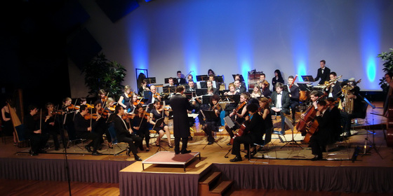

Uitvoerenden
Dit project werd uitgevoerd door symfonieorkest Ensuite en blokfluitensemble Sambuca, beiden onderdeel van ESMG Quadrivium. Daarnaast zullen solisten op accordeon en cello en dansers van verschillende stijlen het concert verrijken.
ESMG Quadrivium
Het Eindhovens Studenten Muziek Gezelschap Quadrivium is dé plek in Eindhoven waar alle studenten die zich bezighouden met klassieke muziek terecht kunnen. De vereniging bestaat uit het gemengd koor Vokollage, het symfonieorkest Ensuite, het blokfluitensemble Sambuca en het harmonieorkest Auletes. Meer informatie kunt u vinden op de website www.studentenmuziek.nl.
Symfonieorkest Ensuite
Symfonieorkest Ensuite is voortgekomen uit het strijkerensemble 'Ma Non Troppo' en is in de zomer van 2002 opgericht als ondervereniging van ESMG Quadrivium. Momenteel telt Ensuite ongeveer 25 leden. Het orkest heeft de ambitie om verder te groeien, muzikanten van verschillende instrumenten zijn van harte welkom. Natuurlijk kan de bezetting licht variëren per werk dat op het repertoire staat en zonodig zal het orkest aangevuld worden met gastspelers.
Ensuite speelt werken uit verschillende stijlperiodes. Componisten die de laatste jaren aan bod kwamen zijn onder andere Bach, Debussy, Dvorák, Grieg, Mozart, Mussorgsky, Pachelbel en Ravel. In het verleden zijn een aantal grote projecten neergezet door Ensuite: het jazzconcert in 2006, het Requiem en Magnificat van John Rutter in 2008 en het projectconcert 'Peer Gynt, een man op zoek' in 2009.

Ensuite tijdens het Peer Gynt concert op 7 maart 2009. Foto: Ronald Paulissen.
Dirigent Ensuite: Ghislain Bellefroid
Sinds april 2009 is Ghislain Bellefroid dirigent bij Ensuite. Ghislain studeerde klarinet aan het Rotterdams Conservatorium bij Walter Boeykens en aan het Sweelinck Conservatorium bij Piet Honingh. Hier behaalde hij zijn diploma's voor Docerend- en Uitvoerend Musicus. Tijdens zijn studie behaalde hij diverse prijzen in binnen- en buitenland. Zo won hij in 1991 het concours van de stichting 'Jong Muziektalent Nederland'.
Naast klarinet is hij ook tweede fase afgestudeerd Hafa-directie bij Jan Cober en Gert Buitenhuis. In 2003 behaalde Ghislain zijn diploma eerste fase orkestdirectie bij Kerry Woodward met een uitvoering van o.a. de vierde symfonie van Bruckner. Hij volgde masterclasses bij Jorma Panula, Arie van Beek, Ed Spanjaard, Roberto Benzi en Jan Stulen en dirigeerde zodoende al eens het Nederlands Promenade Orkest tijdens een concert in Amsterdam.
Ghislain is naast dirigent van Ensuite eveneens verbonden aan het orkest OBK Bennekom. Tevens dirigeert hij zijn eigen professionele ensemble 'A Piacere'. Dit ensemble speelt op projectbasis en is samengesteld uit musici van de diverse Nederlandse beroepsorkesten waaronder het Radio Philharmonisch Orkest en Het Gelders Orkest.
Blokfluitensemble Sambuca
Zover bekend is Sambuca het enige studenten blokfluitgezelschap in Nederland. Deze ondervereniging van het Eindhovens Studenten Muziekgezelschap Quadrivium is in 1986 opgericht en wordt volledig gerund door studenten.
Sinds 1997 staat Sambuca onder de inspirerende leiding van Maartje van den Boom–Coppes. Zij studeerde blokfluit, docerend musicus, in Maastricht bij Dorothea Winter en in Kassel (Duitsland) bij Winfried Michel. Zij sloot in 1993 deze studie cum laude af. Haar uitvoerend musicus diploma behaalde ze in Utrecht bij Heiko ter Schegget. Hiernaast studeerde ze schoolmuziek in Tilburg. Tijdens haar studies legde zij zich toe op het leiden van ensembles en koren. In 2005 volgde ze de Kurt Thomas cursus.
Maartje werkte jaren als blokfluit- en AMV-docent op diverse muziekscholen in Noord-Brabant. Vanaf januari 1999 is zij in dienst bij Factorium Tilburg als consulent en initieert, organiseert en begeleidt muziek- en dansprojecten voor het reguliere onderwijs. Maartje leidt regelmatig blokfluitgroepen o.a. bij de Limburgse blokfluitdagen, de dag van de muziek en bij Huismuziek.
ESDV Footloose
De Eindhovense Studentendansvereniging Footloose geeft cursussen in dans in de breedste zin van het woord. Jazzballet, rock-‘n-roll, salsa, stijldansen, tapdance en daarnaast nog workshops in allerlei andere dansdisciplines. Het is daarmee een vanzelfsprekende partner in dit dansconcert. Footloose zal zich laten vertegenwoordigen door de groep 'moderne dans', onder leiding van Eliëtte van der Heijden. Zij maakte tevens de choreografie voor de dans op de Serenata Espagnola. Ook laat Footloose zich zien tijdens 'Wiener Blut' en 'Big Spender'.
Accordeonsolist Niek van Uden
De accordeonsolo in het stuk Oblivion wordt gespeeld door musicus Niek van Uden. Hij speelt sinds zijn achtste accordeon en ging tijdens de middelbare school al twee jaar naar de vooropleiding voor het conservatorium. In 2006 studeerde hij af als docent accordeon aan het Fontys Conservatorium te Tilburg bij Ronald van Overbruggen. Al tijdens zijn studie ging hij lessen geven, wat hij inmiddels door heel Nederland doet. Naast zijn doceerwerk geeft hij graag workshops aan beginnende accordeonisten om het instrument te leren kennen en is hij als dirigent actief binnen het verenigingsleven. Zijn interesses reiken verder dan alleen muziek, wat in 2009 resulteerde in een voltooide studie algemene cultuurwetenschappen. Het stuk Oblivion heeft hij al in diverse uitvoeringen en bezettingen gespeeld en is telkens weer een geweldig mooi werk.
Argentijnse Tango
De Artentijnse tango op Oblivion van Piazolla zal uitgevoerd worden door danspaar Ingrid Moonen en Bart Wijgergangs uit Eindhoven. Dit professionele danspaar heeft zich na enkele jaren stijldansen gericht op de Argentijnse Tango. Ze hebben sindsdien lessen van Argentijnse en Europese maestro’s gevolgd om de tango verder te doorgronden en geven zelf met veel passie workshops en lessen in Eindhoven.